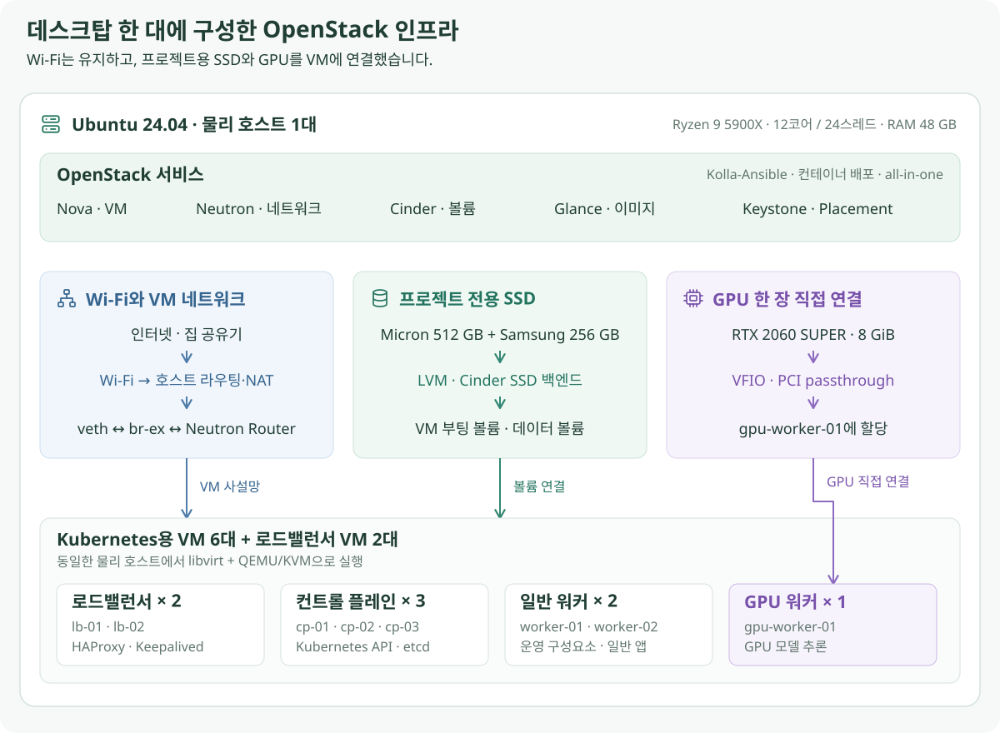
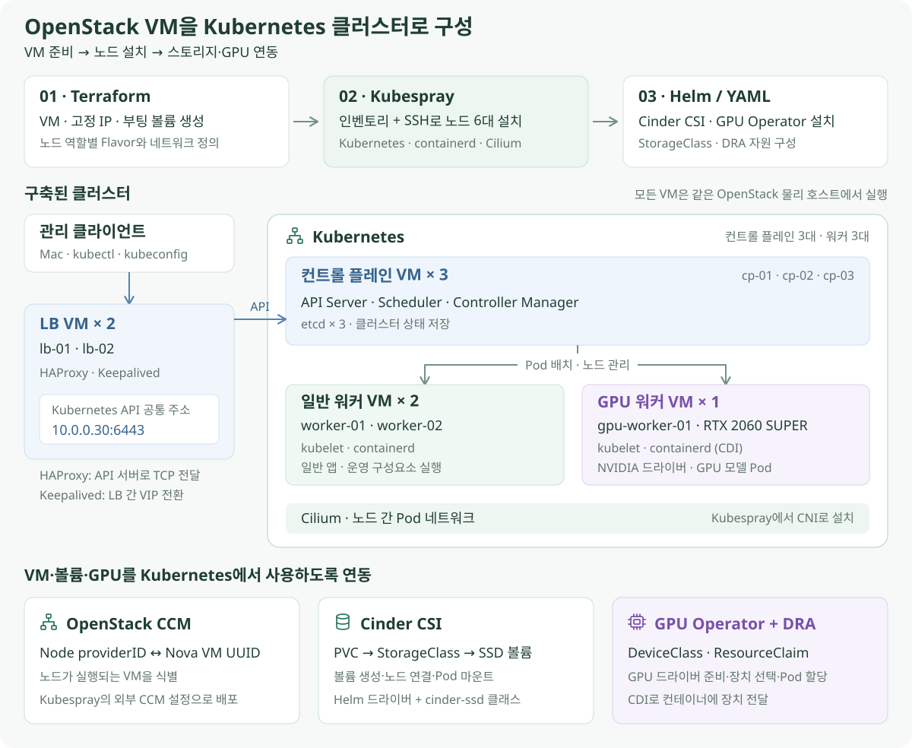
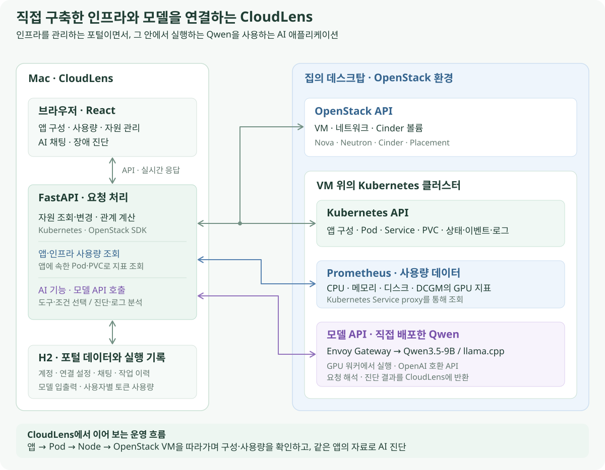

프로젝트 소개
집의 데스크탑에 OpenStack을 설치하고, VM 위에 Kubernetes와 GPU 모델 서버를 구축한 뒤, 이 환경을 관리하는 웹 포털 CloudLens를 개발했습니다. 인프라 구축부터 모델 서빙, 그 모델을 사용하는 AI 애플리케이션 개발까지 직접 연결한 프로젝트입니다.
출발점은 집에 있는 장비로 모델 서버를 운영해 보고 싶다는 생각이었습니다. Wi-Fi와 GPU 한 장이라는 환경에 맞춰 네트워크·저장소·GPU를 구성했고, 직접 배포한 모델로 자원을 검색하고 장애 원인을 진단하는 CloudLens를 만들었습니다. 앱의 구성과 실행 인프라를 함께 살펴보는 기능도 더했습니다.
전체 구성
- OpenStack 구축 — 집의 장비·네트워크에 맞춘 가상화 기반
- Kubernetes와 모델 서버 — VM을 클러스터로 묶고 GPU 모델 API 제공
- CloudLens 개발 — 구축한 인프라와 모델을 사용하는 포털
- 개발 과정 · AI 조회·진단·기록 · 앱 추적·대시보드 · 자원 관리·접속 · 시스템·계정
- CloudLens 기능과 화면 — AI 검색·진단, 앱 구성·추적, 사용량 확인과 자원 관리
1. 집의 환경에 맞춘 OpenStack 구축
Ubuntu 데스크탑에 Kolla-Ansible로 OpenStack을 설치해 VM·네트워크·볼륨을 관리하는 기반을 만들었습니다.

- 네트워크: Wi-Fi 연결을 유지하면서 가상 Ethernet과 라우팅·NAT로 VM의 외부 통신 경로를 구성했습니다.
- 저장소: 프로젝트 전용으로 사용할 여분 SSD 두 개를 장착하고 Cinder 백엔드로 등록했습니다.
- GPU: RTX 2060 SUPER 8 GiB를 VFIO·PCI passthrough로 GPU 워커 VM에 연결했습니다.
호스트와 배포 설정은 OpenStack 설치 과정에서 확인할 수 있습니다. 네트워크·저장소·GPU의 구성 원리와 설정 명령어는 Wi-Fi 네트워크 구성, SSD·Cinder 구성, GPU 패스스루에서 확인할 수 있습니다.
2. Kubernetes와 GPU 모델 서버 구축
Terraform으로 VM을 만들고 Kubespray로 Kubernetes를 설치했습니다. 컨트롤 플레인 3대, 일반 워커 2대, GPU 워커 1대와 별도의 로드밸런서 2대로 역할을 나눴습니다.

- 클러스터: Cilium으로 Pod 네트워크를 구성하고, HAProxy·Keepalived로 공통 접속 주소를 마련했습니다.
- OpenStack 연동: CCM으로 Node와 VM을 연결하고, Cinder CSI로 SSD 볼륨을 PVC에서 사용하게 했습니다.
- GPU 할당: GPU Operator와 DRA를 적용해 모델 Pod가 사용할 GPU를 지정했습니다.
모델 서빙은 llm-d 아키텍처를 바탕으로 KServe·Envoy Gateway·InferencePool을 조합했습니다. Qwen3.5-9B 양자화 모델을 llama.cpp로 실행하고 OpenAI 호환 API로 제공합니다. Open WebUI는 이 API를 채팅 화면에 연결하고, Prometheus·DCGM은 실행 중인 자원의 사용량을 수집합니다.
단계별 설정과 명령어는 VM·로드밸런서 → Kubernetes·CCM·CSI → GPU Operator·DRA → 모델 서빙 순서로 확인할 수 있습니다. Open WebUI·HTTPS와 모니터링도 같은 클러스터에 구성했습니다.
3. 이 환경을 운영하는 CloudLens 개발
직접 구축한 Qwen 모델을 활용해 인프라를 자연어로 검색하고 장애 원인을 진단하는 CloudLens를 개발했습니다. 채팅으로 자원과 관계를 찾고, 상태·이벤트·로그를 바탕으로 원인과 다음 행동을 확인할 수 있습니다. 로그 분석과 YAML 초안 작성에도 같은 모델을 사용합니다.
그다음으로 중점을 둔 기능은 애플리케이션 구성과 실행 인프라를 한 화면에서 추적하는 것입니다. Kubernetes의 Pod·Service·PVC부터 실행 노드와 OpenStack VM까지 연결해, 채팅에서 찾은 앱을 구성도와 상세 화면으로 이어서 살펴볼 수 있게 했습니다.

화면은 React·TypeScript, 서버는 FastAPI, 계정·설정·채팅·실행 기록 저장은 H2로 구성했습니다. 서버가 Kubernetes·OpenStack SDK와 Prometheus API를 호출하고, 화면은 조회 결과를 목록·구성도·사용량 그래프로 보여줍니다.
모델은 검색할 도구와 조건을 선택하고, 장애 진단에서는 상태·이벤트·로그를 읽어 원인과 다음 행동을 제안합니다. 앱의 연결 관계와 목록 필터링은 코드로 처리합니다. 모델에 보낸 입력과 응답, 도구 실행, 사용자별 토큰 사용량도 추적할 수 있게 했습니다.
인프라를 연결한 방식과 기능별 구현 흐름은 CloudLens 개발 과정에서 확인할 수 있습니다.
4. CloudLens에서 사용할 수 있는 기능
AI로 자원을 찾고 장애 원인을 질문하는 기능을 중심으로, 앱 구성·실행 위치 추적과 사용량 확인을 제공합니다. 조사 중 찾은 자원은 상세 화면에서 관리하고 터미널로 접속할 수 있습니다.
- AI로 조회·분석: 채팅 검색 · 장애 진단·로그 분석 · YAML 초안 작성
- 앱 구성과 사용량: 앱 구성·추적 · 사용량·용량 대시보드
- 자원 관리와 접속: Kubernetes·AI YAML 작성 · OpenStack · 터미널·콘솔
- 설정과 운영: 계정·연결 · AI 설정 · 실행 기록·토큰 사용량
채팅으로 자원과 관계 검색
“이름에 gpu가 들어간 VM 보여줘”처럼 요청하면 조건에 맞는 자원을 표로 보여줍니다. 이름을 누르면 자원 상세로 이동합니다. 목록 검색뿐 아니라 “이 PVC를 사용하는 자원”이나 앱 구성을 묻는 관계 조회도 채팅에서 요청할 수 있습니다.

장애 원인과 다음 행동 확인
앱이 동작하지 않을 때는 이름과 증상을 질문합니다. 상태·설정·이벤트·로그를 모아 원인 판단과 추천하는 다음 행동을 보여주고, 판단 근거를 펼쳐 확인할 수 있습니다. 아래는 반복 종료되는 crash-demo를 조사해 실행 명령의 exit 7을 지목한 장애 진단 결과입니다.

특정 컨테이너만 조사할 때는 Pod 상세에서 실시간 로그를 읽거나 재시작 전 로그를 확인합니다. 불러온 로그에 바로 AI 분석을 요청할 수도 있습니다.

통합 현황과 앱 추적
배포된 앱의 준비 상태를 확인하고, 앱 하나를 선택해 연결된 자원을 구성도로 펼칩니다. 아래 Open WebUI 화면에서는 요청을 받는 Gateway부터 Service, Deployment, 실행 노드와 PVC까지 한 번에 볼 수 있습니다. GPU를 사용하는 앱에는 GPU 구성도 함께 나타납니다.

노드를 선택하면 그 노드에 대응하는 OpenStack VM으로 이동할 수 있습니다. 앱에서 실행 머신까지 따라가는 흐름을 연결해, Kubernetes와 OpenStack에서 같은 대상을 다시 검색하는 일을 줄였습니다.

사용량과 남은 용량 확인
앱을 선택하면 그 앱에 속한 Pod의 CPU·메모리·저장소 사용량을 그래프로 확인합니다. 조회 기간을 바꿔 부하 변화를 살펴보고, 자원 상세의 대시보드에서도 같은 지표를 볼 수 있습니다.

인프라 전체에서는 OpenStack 호스트·Cinder 저장소와 Kubernetes 노드의 여유 용량을 확인합니다. GPU는 카드별 사용률·메모리 사용량과 사용하는 앱을 함께 표시합니다. 사용량과 용량을 구분한 대시보드에서 앱 부하와 추가 배치 여유를 각각 살펴볼 수 있습니다.

Kubernetes 자원 관리와 AI YAML 작성
Pod·Deployment·Service·PVC 같은 기본 자원과 클러스터에 등록된 CRD를 탐색합니다. 목록에서 생성·수정·삭제와 일괄 작업을 수행하고, 상세 화면의 연결된 자원으로 이동해 상위 컨트롤러나 실행 노드를 따라갈 수 있습니다.

자원을 만들 때는 YAML 편집기를 사용합니다. 원하는 이름·이미지·포트 등 요구사항을 입력하면 AI가 YAML 초안을 작성하며, 작성된 내용을 확인하고 수정한 뒤 생성할 수 있습니다.

OpenStack 자원 관리
VM·이미지·키 페어·볼륨·네트워크를 탐색하고 생성·수정·삭제합니다. 인스턴스 목록에서는 전원·작업 상태를 확인하며 개별 작업과 일괄 작업을 수행합니다. VM 상세에서는 연결된 볼륨·포트·보안 그룹으로 이동할 수 있습니다.

브라우저에서 터미널과 콘솔 접속
Pod에는 컨테이너와 셸을 선택해 접속하고, VM에는 저장한 개인키로 SSH 접속합니다. OpenStack VM 콘솔도 상세 화면에서 열 수 있어, 로그 확인부터 직접 명령 실행까지 포털 안에서 이어갈 수 있습니다.

VM SSH 연결 화면. 접속할 VM과 저장된 키를 선택한 뒤 터미널을 엽니다.
계정과 인프라 연결 관리
로그인한 사용자별로 사용할 Kubernetes·OpenStack 연결과 SSH 키를 관리합니다. 클러스터가 올라간 OpenStack을 지정하고 Node와 VM의 연결을 확인하면, 통합 현황과 앱 추적에서도 그 관계를 사용합니다.

AI 모델 연결 설정
사용할 모델의 연결 방식과 주소, 모델명, 입력·출력 한도를 설정하고 연결을 테스트합니다. 직접 배포한 Qwen API를 기본으로 사용하면서, 비교가 필요할 때 다른 모델 제공자로 변경할 수 있습니다.

AI 실행 기록과 사용자별 토큰 관리
관리자는 채팅·진단·로그 분석·YAML 작성에서 누가 어떤 모델을 사용했고 입력·출력 토큰을 얼마나 썼는지 확인합니다. 답변이 이상하면 해당 실행에서 모델에 보낸 입력, 도구 정의, 선택된 도구·인자와 실행 결과를 따라가며 응답이 만들어진 과정을 추적할 수 있습니다. 답변의 좋아요·싫어요 평가도 함께 관리합니다.

기능별 화면과 사용 방법은 CloudLens 기능 소개에서 확인할 수 있습니다. 실제 배포 버전·주소·볼륨·실행 옵션은 환경 구성 명세에서 확인할 수 있습니다.